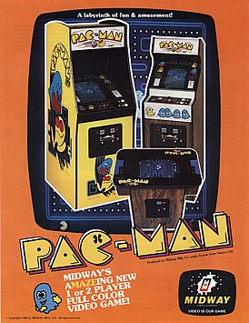
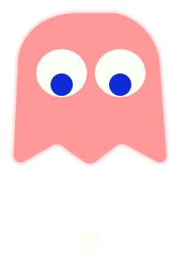
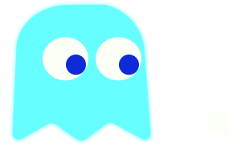
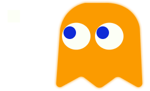
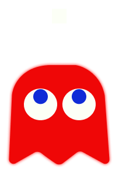

Pac-Man

Листовка, рекламирующая аркадную версию игры в Северной Америке
Разработчик: Namco
Издатели: Namco, Midway
Даты выпуска: 22 мая 1980
Жанр: аркада, лабиринт
Создатели
Геймдизайнер: Тору Иватани
Программист: Сигэо Фунаки
Композитор: Тосио Кай
Технические данные
Платформа: аркадный автомат
Режимы: игры 1—2 игрока
Управление: аркадный джойстик
Тип корпуса: вертикальный, горизонтальный, мини
Дисплей: 224 x 288 пикселей
Процессор: Zilog Z80
Звук: трёхканальный ПГЗ, моно
Содержание
Общие сведения
Экран игры занимает собой лабиринт, коридоры которого заполнены точками. Задача игрока — управляя Пакманом, съесть все точки в лабиринте, избегая встречи с привидениями, которые гоняются за героем. В начале каждого уровня призраки находятся в недоступной Пакману прямоугольной комнате в середине уровня, из которой они со временем освобождаются. Если привидение дотронется до Пакмана, то его жизнь теряется, призраки и Пакман возвращаются на исходную позицию, но при этом прогресс собранных точек сохраняется. Если при столкновении с призраком у Пакмана не осталось дополнительных жизней, то игра заканчивается. После съедения всех точек начинается новый уровень в том же лабиринте. По бокам лабиринта находятся два входа в один туннель, при вхождении в который Пакман и призраки выходят с другой стороны лабиринта.
Всего в лабиринте находятся 240 маленьких точек и 4 большие, известные как энерджайзеры (англ. energizer). За съедение маленькой точки даётся 10 очков, а за съедение энерджайзера — 50. Таким образом, в общей сложности все точки в лабиринте стоят 2600 очков. При съедении Пакманом энерджайзера на ранних уровнях призраки в лабиринте на короткое время входят в режим испуга, резко меняют направление движения и перекрашиваются в синий цвет. За это время Пакман способен съесть призраков посредством столкновения с ними, которое безопасно. От съеденного привидения остаются только глаза, которые возвращаются в центр лабиринта, где призрак вновь оживает и отправляется в погоню за Пакманом. За съедение первого призрака после получения энерджайзера даётся 200 очков. За съедение каждого следующего привидения при эффекте того же энерджайзера даётся в два раза больше: 400, 800 и 1600 соответственно. Таким образом, при съедении всех призраков после каждого эффекта энерджайзера игрок может заработать за один уровень 12 000 очков. Однако с 19-го уровня призраки перестают быть синими и больше не могут быть съедены.
На каждом уровне в месте ниже зоны призраков дважды за раунд появляются бонусы, называемые фруктами. Первый фрукт появляется после съедения Пакманом 70 точек, второй — после съедения 170. За съедение бонуса даётся от 100 до 5000 очков в зависимости от того, какого уровня достиг игрок. Бонус находится на экране примерно 9 секунд, после чего исчезает. Фрукты, съеденные на текущем и на шести последних пройденных уровнях, отображаются под лабиринтом внизу экрана.
До 21-го уровня скорость Пакмана при обычном движении выше скорости призраков, но с 21-го призраки в режиме погони двигаются быстрее главного героя. Поедание точек замедляет Пакмана примерно на 10 % от его скорости, что позволяет призракам на всех уровнях догнать героя. После съедения энерджайзера, пока призраки напуганы, скорость Пакмана увеличивается, а движение призраков замедляется. С 5 по 20 уровень Пакман и без того двигается с максимальной скоростью, и при съедении энерджайзера он не становится быстрее. Когда призраки проходят через боковой туннель, то их скорость уменьшается почти наполовину. Пакман и призраки появляются в трёх юмористических анимационных заставках между уровнями, в так называемых антрактах (англ. intermission). Они добавлены в игру как награда за прохождение и для того, чтобы дать игроку отдохнуть.
В аркаде присутствует режим на двух игроков, для чего автомат был оснащён двумя монетоприёмниками. В этом режиме игроки играют по очереди, соревнуясь в наборе очков. Очередь переходит к другому игроку при потере предыдущим жизни.
Всего в лабиринте находятся 240 маленьких точек и 4 большие, известные как энерджайзеры (англ. energizer). За съедение маленькой точки даётся 10 очков, а за съедение энерджайзера — 50. Таким образом, в общей сложности все точки в лабиринте стоят 2600 очков. При съедении Пакманом энерджайзера на ранних уровнях призраки в лабиринте на короткое время входят в режим испуга, резко меняют направление движения и перекрашиваются в синий цвет. За это время Пакман способен съесть призраков посредством столкновения с ними, которое безопасно. От съеденного привидения остаются только глаза, которые возвращаются в центр лабиринта, где призрак вновь оживает и отправляется в погоню за Пакманом. За съедение первого призрака после получения энерджайзера даётся 200 очков. За съедение каждого следующего привидения при эффекте того же энерджайзера даётся в два раза больше: 400, 800 и 1600 соответственно. Таким образом, при съедении всех призраков после каждого эффекта энерджайзера игрок может заработать за один уровень 12 000 очков. Однако с 19-го уровня призраки перестают быть синими и больше не могут быть съедены.
На каждом уровне в месте ниже зоны призраков дважды за раунд появляются бонусы, называемые фруктами. Первый фрукт появляется после съедения Пакманом 70 точек, второй — после съедения 170. За съедение бонуса даётся от 100 до 5000 очков в зависимости от того, какого уровня достиг игрок. Бонус находится на экране примерно 9 секунд, после чего исчезает. Фрукты, съеденные на текущем и на шести последних пройденных уровнях, отображаются под лабиринтом внизу экрана.
До 21-го уровня скорость Пакмана при обычном движении выше скорости призраков, но с 21-го призраки в режиме погони двигаются быстрее главного героя. Поедание точек замедляет Пакмана примерно на 10 % от его скорости, что позволяет призракам на всех уровнях догнать героя. После съедения энерджайзера, пока призраки напуганы, скорость Пакмана увеличивается, а движение призраков замедляется. С 5 по 20 уровень Пакман и без того двигается с максимальной скоростью, и при съедении энерджайзера он не становится быстрее. Когда призраки проходят через боковой туннель, то их скорость уменьшается почти наполовину. Пакман и призраки появляются в трёх юмористических анимационных заставках между уровнями, в так называемых антрактах (англ. intermission). Они добавлены в игру как награда за прохождение и для того, чтобы дать игроку отдохнуть.
В аркаде присутствует режим на двух игроков, для чего автомат был оснащён двумя монетоприёмниками. В этом режиме игроки играют по очереди, соревнуясь в наборе очков. Очередь переходит к другому игроку при потере предыдущим жизни.
Поведение призраков
Призраки имеют три разные запрограммированные модели поведения: преследование (англ. chase), рассеивание (англ. scatter) и испуг (англ. frightened). Для движения призраков в первых двух режимах игра использует разделение игрового экрана на квадраты. В аркадной версии один такой квадрат имеет размер 8 x 8 пикселей при разрешении экрана 224 x 288. В режимах рассеивания и преследования у призраков есть определённый квадрат, который они пытаются достичь. При рассеивании привидения стремятся к квадратам, которые находятся за пределами лабиринта ближе к его углам. Например, красный призрак стремится к правому верхнему углу. В режиме испуга призраки не имеют целевой точки и выбирают поворот в лабиринте при помощи генератора псевдослучайных чисел. Расчёт целевой точки при преследовании исключителен для каждого призрака, что придаёт им уникальное поведение:

Розовый призрак Спиди (англ. Speedy) по прозвищу Пинки (англ. Pinky). Оригинальное японское имя — Матибусэ (яп. 待ち伏せ, сидящий в засаде), прозвище — Пинки (яп. ピンキー). В качестве цели при преследовании использует точку, находящуюся на четыре клетки впереди Пакмана. Однако из-за ошибки переполнения при движении Пакмана вверх Пинки использует в качестве цели квадрат, находящийся на четыре клетки вверх и на четыре влево от Пакмана.

Голубой призрак Башфул (англ. Bashful) по прозвищу Инки (англ. Inky). Оригинальное японское имя — Кимагурэ (яп. 気まぐれ, непостоянный), прозвище — Аосукэ (яп. 青助, голубой). Использует самый сложный алгоритм преследования: для определения направления движения строится отрезок, один из концов которого определяется положением Блинки, а середина находится на 2 клетки перед Пакманом. Второй конец отрезка — искомая целевая точка. Получившуюся точку сложно предсказать, поэтому Инки считается самым опасным привидением. Из-за ошибки переполнения, аналогичной в поведении Пинки, во время движения Пакмана вверх целевая клетка Инки это две клетки вверх и две влево от Пакмана.
Оранжевый призрак Поки (англ. Pockey) по прозвищу Клайд (англ. Clyde). Оригинальное японское имя — Отобокэ (яп. お惚け, глупый), прозвище — Гудзута (яп. 愚図た, медленный). Если Клайд находится дальше 8 клеток от Пакмана, то он использует в качестве цели самого Пакмана, как Блинки. Если же Пакман ближе 8 клеток, то Клайд стремится к левому нижнему углу, как при рассеивании.

Красный призрак Шэдоу (англ. Shadow) по прозвищу Блинки (англ. Blinky). Оригинальное японское имя — Оикакэ (яп. 追いかけ, преследователь), прозвище — Акабэй (яп. 赤ベイ, красный). В режиме преследования использует как цель ту клетку, в которой находится Пакман. Блинки, в отличие от других привидений, увеличивает свою скорость преследования относительно первоначальной дважды за уровень в зависимости от количества съеденных точек. Если точек осталось мало, то он меняет целевую клетку в режиме рассеивания на квадрат, в котором находится Пакман, и так гоняется за героем в двух режимах. Подобное «агрессивное» поведение призрака игроки прозвали «круизом Элроя» (англ. Cruise Elroy).

Пока призраки находятся в одном из режимов, сменить направление движения они могут только во время поворота в лабиринте, но в момент смены одного режима на другой привидения способны сменить направление движения на противоположное. Исключение составляет переход от испуга к другим режимам. Из закрытой зоны в начале уровня призраки выбираются, находясь в режиме рассеивания, позже сменяя его на преследование. Затем в течение раунда привидения могут начать рассеиваться ещё три раза. При потере Пакманом жизни счётчик рассеивания сбрасывается. В зависимости от уровня время этого режима может длиться от 1/60 до 7 секунд. Время преследования до следующего рассеивания может продолжаться на разных уровнях от 30 до 1037 секунд. Когда все четыре рассеивания истекают, призраки преследуют Пакмана без остановки. Если призраки испуганы, таймер других режимов приостанавливается.
Единственный призрак, который в начале каждого уровня или после потери Пакманом жизни стартует сразу вне зоны призраков, — Блинки. За ним в строгом порядке выходят Пинки, затем Инки и последним Клайд. В течение первых трёх уровней привидения выходят после съедения Пакманом определённого количества точек. Например, на первом уровне Пинки покидает зону после 30 точек, а Инки после 60-ти. После потери Пакманом жизни этот счётчик сбрасывается и запускается новый, но с меньшим количеством точек. С четвёртого уровня и до конца игры все призраки сразу покидают зону после старта уровня. Есть также таймер, который позволяет призракам покинуть свою зону, если Пакман определённое время не ест точки. Например, если на первом уровне Пакман, не съев 30 точек, застынет на месте, Пинки отправится в погоню за ним через четыре секунды после этого. Каждая съеденная точка сбрасывает этот таймер до нуля.
Единственный призрак, который в начале каждого уровня или после потери Пакманом жизни стартует сразу вне зоны призраков, — Блинки. За ним в строгом порядке выходят Пинки, затем Инки и последним Клайд. В течение первых трёх уровней привидения выходят после съедения Пакманом определённого количества точек. Например, на первом уровне Пинки покидает зону после 30 точек, а Инки после 60-ти. После потери Пакманом жизни этот счётчик сбрасывается и запускается новый, но с меньшим количеством точек. С четвёртого уровня и до конца игры все призраки сразу покидают зону после старта уровня. Есть также таймер, который позволяет призракам покинуть свою зону, если Пакман определённое время не ест точки. Например, если на первом уровне Пакман, не съев 30 точек, застынет на месте, Пинки отправится в погоню за ним через четыре секунды после этого. Каждая съеденная точка сбрасывает этот таймер до нуля.
256-й уровень
По замыслу разработчиков, у Pac-Man не должно было быть конца, так как возрастающая сложность игры не позволила бы продвинуться далеко. Однако игроки обнаружили, что, начиная с 21-го уровня и далее, поведение призраков становилось одинаковым. Это привело к идее создания шаблонов движения для Пакмана, которые позволяли проходить уровни по заученному маршруту. Так, некоторые игроки смогли пройти 255 уровней игры, что занимало несколько часов, и на 256 уровне обнаружить проявление программной ошибки в виде «экрана смерти», о существовании которого не подозревали разработчики игры.
На 256-м уровне левая половина лабиринта отображается корректно, а правая представляет собой беспорядочный набор разноцветных цифр, букв и других символов. Помимо этого, в правой части представлена иная архитектура лабиринта, которая невидима для игрока. Причиной этой ошибки является процедура, выполняющая подсчёт бонусов под лабиринтом. При достижении 256-го уровня она загружает в регистр центрального процессора значение 255 и увеличивает его на единицу. 255 является максимальным значением, которое способно уложиться в регистре процессора Zilog Z80, поэтому при увеличении на 1 происходит целочисленное переполнение и в регистр записывается ноль. Подпрограмма написана так, что если данное значение меньше 7, то она считает, что это один из первых уровней, на котором нужно нарисовать бонусные символы. После рисования регистр уменьшается на единицу, а условием окончания рисования у подпрограммы является нулевое значение регистра. Однако, так как нулевое значение было уменьшено на 1, то происходит «переполнение снизу», так как в регистре не может быть записано число меньше 0, и в него помещается 255. Цикл рисования выполняется с уменьшением значения регистра до тех пор, пока оно не станет равным 0 (то есть 256 раз), и при этом подпрограмма рисует бонусы. Изображения бонусов в игре хранятся в специальной таблице, перебор по которой идёт во время выполнения описанной процедуры. Так как её размер меньше 256, то подпрограмма выходит за пределы таблицы и начинает использовать не предназначенные для этого данные, что приводит к печати на экране изменённой архитектуры лабиринта.
В левой части экрана расположены 114 точек и 9 в правой, 4 из которых невидимы. Так как на уровне нет возможности съесть в общей сложности 244 точки, то его невозможно пройти. Однако на некоторых версиях аркадных автоматов посредством манипуляций с DIP-переключателями можно было очистить уровень от точек и загрузить следующий. На 256-м уровне такой способ загружает первый уровень игры, но с поведением призраков, идентичным 21-му уровню и выше.
На 256-м уровне левая половина лабиринта отображается корректно, а правая представляет собой беспорядочный набор разноцветных цифр, букв и других символов. Помимо этого, в правой части представлена иная архитектура лабиринта, которая невидима для игрока. Причиной этой ошибки является процедура, выполняющая подсчёт бонусов под лабиринтом. При достижении 256-го уровня она загружает в регистр центрального процессора значение 255 и увеличивает его на единицу. 255 является максимальным значением, которое способно уложиться в регистре процессора Zilog Z80, поэтому при увеличении на 1 происходит целочисленное переполнение и в регистр записывается ноль. Подпрограмма написана так, что если данное значение меньше 7, то она считает, что это один из первых уровней, на котором нужно нарисовать бонусные символы. После рисования регистр уменьшается на единицу, а условием окончания рисования у подпрограммы является нулевое значение регистра. Однако, так как нулевое значение было уменьшено на 1, то происходит «переполнение снизу», так как в регистре не может быть записано число меньше 0, и в него помещается 255. Цикл рисования выполняется с уменьшением значения регистра до тех пор, пока оно не станет равным 0 (то есть 256 раз), и при этом подпрограмма рисует бонусы. Изображения бонусов в игре хранятся в специальной таблице, перебор по которой идёт во время выполнения описанной процедуры. Так как её размер меньше 256, то подпрограмма выходит за пределы таблицы и начинает использовать не предназначенные для этого данные, что приводит к печати на экране изменённой архитектуры лабиринта.
В левой части экрана расположены 114 точек и 9 в правой, 4 из которых невидимы. Так как на уровне нет возможности съесть в общей сложности 244 точки, то его невозможно пройти. Однако на некоторых версиях аркадных автоматов посредством манипуляций с DIP-переключателями можно было очистить уровень от точек и загрузить следующий. На 256-м уровне такой способ загружает первый уровень игры, но с поведением призраков, идентичным 21-му уровню и выше.